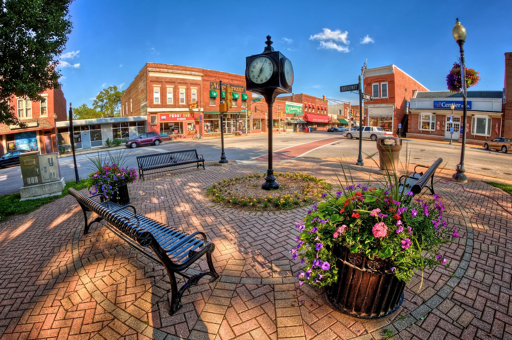

Chesterton, Indiana
About Chesterton
 Chesterton is a town in Westchester, Jackson and Liberty townships in Porter County, in Indiana. Chesterton was home to the annual Wizard of Oz Festival, which is the biggest and most famous of its kind. A little history of Chesterton; the town was first named Calumet in 1850 and was renamed as Chesterton, it's current name in 1870 due to the confusion brought about by another town named Calumet on a similar railroad line. The best time of the year to visit this town is from late April to late September for ideal weather.
Gallery


Indiana Dunes State Park, Coffee Creek Watershed Preserve, Cowles Bog, Chesterton’s European Market, Dunes Photo Tours, Mission: Escape, Harbor Country Adventures, Acorn Acres farm, Indiana Dunes National Park, Porter Beach